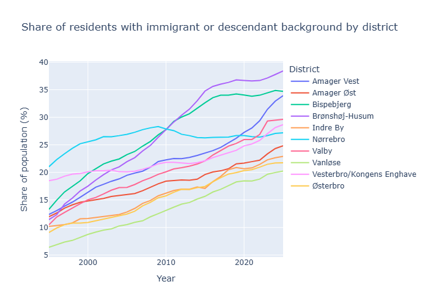
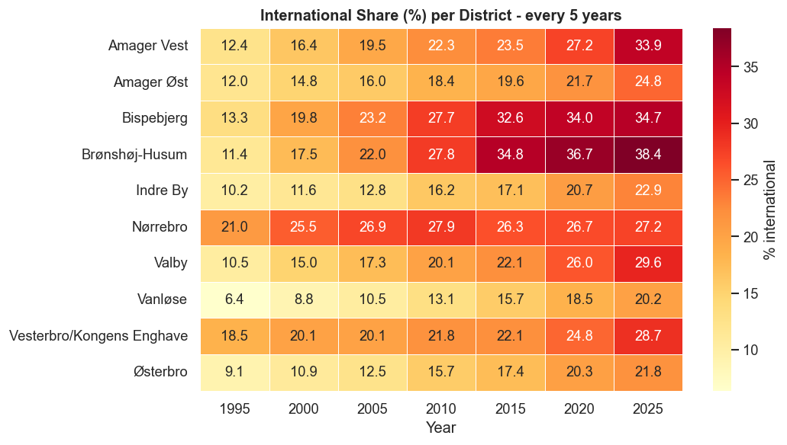
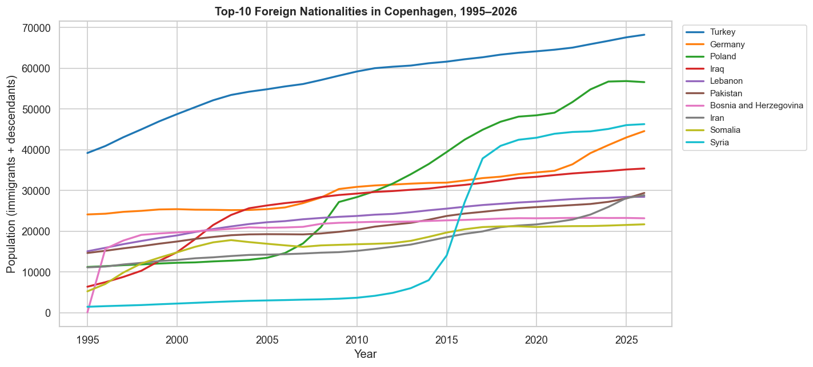
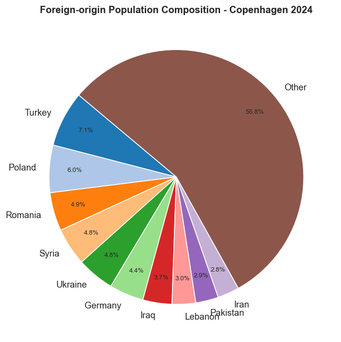
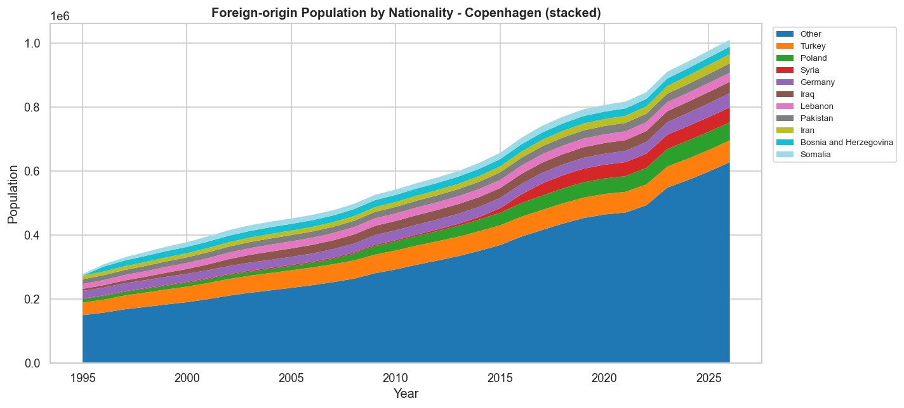
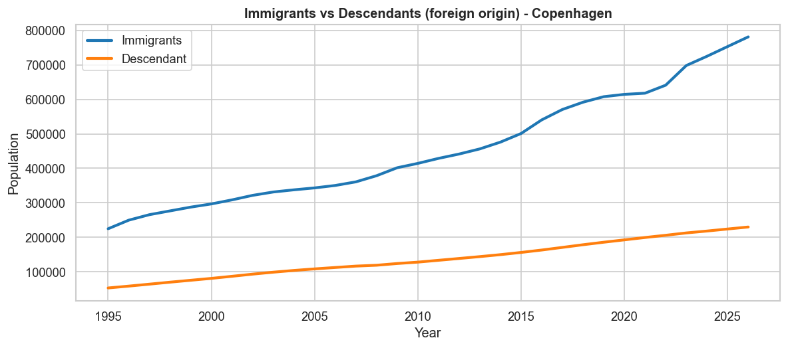
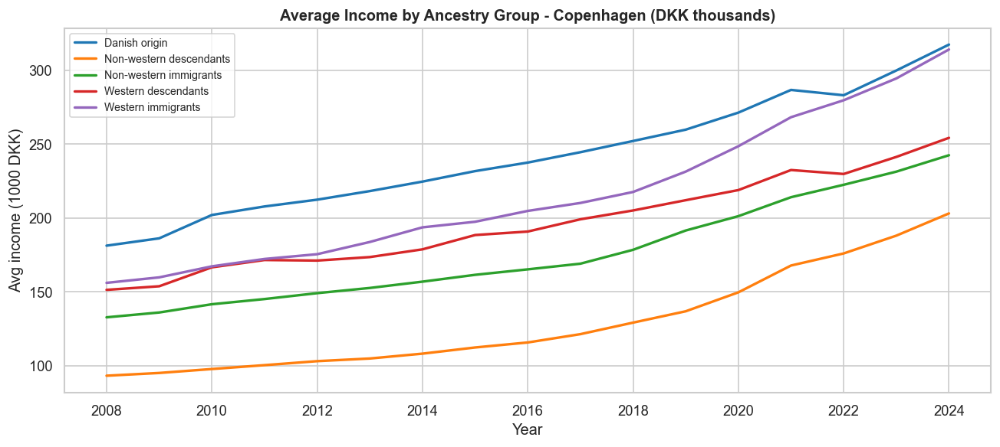
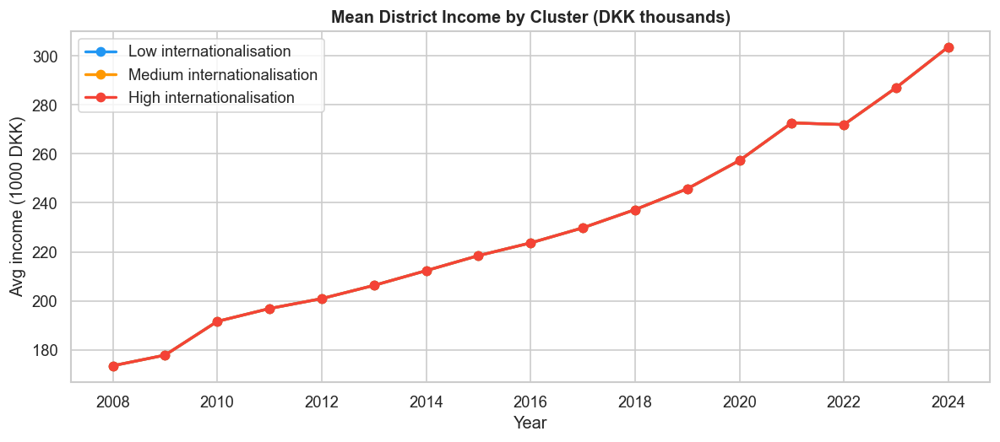
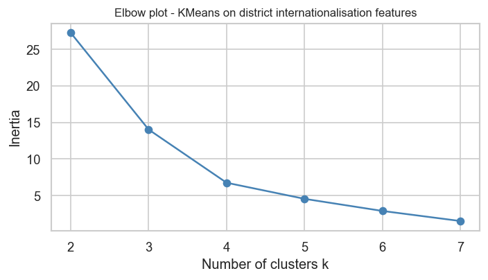
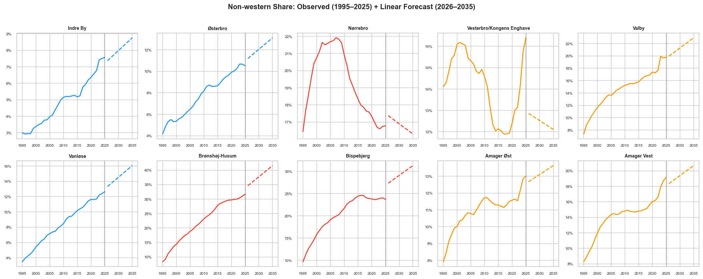

Table of Contents
Introduction
Copenhagen’s population story is not only about the city getting bigger. It is also about how the composition of the city changed, and how this change developed differently across neighbourhoods.
Large cities across Europe have experienced major demographic changes during the last decades due to migration, urbanisation, and economic restructuring. Copenhagen is no exception. However, demographic transformation does not occur evenly across urban space. Some neighbourhoods change rapidly, while others remain comparatively stable.
Previous research on European cities has shown that migration, socioeconomic inequality, and neighbourhood change are often spatially connected, producing distinct urban patterns over time (Musterd et al., 2017; OECD, 2018).
The main question of this project is: How has Copenhagen’s population become more international, and where has this change been strongest?
The website is written for a non-technical reader. The technical details, including preprocessing, modelling, and data choices, are explained in the notebook.
1. Copenhagen has grown steadily since 1995
The first step is to understand the baseline. Copenhagen’s total population has increased steadily over the last three decades, especially after the late 2000s. This means the demographic transformation happened in a growing city.

Figure 1. Copenhagen’s total population increased steadily between 1995 and 2025.
The increase is not perfectly linear. Growth accelerated especially after the financial crisis period and continued strongly through the 2010s. This reflects Copenhagen’s broader urban expansion and increasing attractiveness as both a residential and economic centre.
Importantly, this plot alone does not tell us anything about demographic composition. A larger population does not necessarily mean a more international city. To understand that, we need to move from total population to district-level composition.
Figure 2. Interactive population trend. Hovering makes the yearly values easier to inspect.
2. Growth was uneven across districts
City-wide growth hides important local differences. Some districts expanded much faster than others. This matters because demographic change is experienced locally: in housing areas, schools, workplaces, and neighbourhood communities.
Urban researchers often describe this as uneven urban development: growth concentrates in some parts of the city more than others. Infrastructure investment, housing construction, accessibility, and labour-market opportunities all influence where population growth occurs.

Figure 3. District-level population trends show that Copenhagen’s growth was not spatially uniform.
The district trajectories reveal that Copenhagen’s growth was highly uneven. Amager Vest and Vesterbro/Kongens Enghave experienced especially strong population increases, while districts such as Vanløse changed much more slowly.
These differences matter because demographic change happens locally. Residents experience population change through neighbourhood density, housing development, schools, and public spaces.
This also suggests that internationalisation may not develop uniformly across the city. Some districts may absorb much larger demographic shifts than others.
3. The main story: Copenhagen became more international
The key measure in this project is the share of residents with immigrant or descendant background. Shares make districts comparable, even when they differ in size.
Similar patterns have been observed in many European cities, where immigrant settlement tends to cluster spatially due to housing availability, social networks, and economic conditions. However, clustering does not imply isolation. Many districts can simultaneously become more socioeconomically mixed and more international.

Figure 4. Most districts became more international over time, but they followed different paths.
All districts show upward movement, meaning internationalisation increased across the entire city. However, the trajectories differ substantially.
Nørrebro already started at a relatively high international share in the 1990s, while districts such as Brønshøj-Husum and Amager Vest experienced much stronger long-term increases later on.
This shows that Copenhagen’s demographic transformation was not one single process, but several neighbourhood-level trajectories unfolding at different speeds.

Figure 5. Brønshøj-Husum, Amager Vest, and Bispebjerg had some of the largest increases in international share.
The bar chart makes the unequal pace of change clearer. Brønshøj-Husum experienced the largest percentage-point increase between 1995 and 2025, while districts such as Nørrebro changed less because they were already relatively international at the beginning of the period.
In other words, districts with smaller increases are not necessarily “less international.” Some simply started from a higher baseline.
A compact district-by-year view
The heatmap compresses the long-term pattern into one image. Darker cells indicate a higher international share. This makes it easier to see both long-term growth and differences between districts.

Figure 6. International share by district every five years.
Reading horizontally shows how each district evolved through time, while reading vertically compares districts within the same year. The gradual darkening across many rows highlights that internationalisation was a persistent long-term trend rather than a sudden short-term shift.
Figure 7. Interactive heatmap. Readers can hover to compare exact values across districts and years.
4. Geography: the pattern has a shape
Maps place the district-level trends back onto Copenhagen. They show that demographic change is not just a timeline; it also has a spatial pattern.
Spatial visualisation is important because demographic inequality is inherently geographic. Maps reveal patterns that are difficult to identify from tables or line charts alone.
Figure 8. International share by district in 2025. The map shows where internationalisation is most concentrated.
The spatial pattern reveals that internationalisation is geographically clustered. Some districts contain substantially higher shares of residents with immigrant or descendant backgrounds than others.
The concentration of internationalisation in certain districts also reflects broader urban processes such as housing affordability, accessibility, and neighbourhood-level social networks.
Figure 9. Population change from 1995 to 2025. This shows where the city grew most.
Figure 10. Animated map showing how internationalisation developed across Copenhagen over time.
The animation shows that demographic change spreads gradually over time. Instead of one sudden transformation, the pattern develops progressively across districts.
5. Who are the communities behind the change?
District trends show where internationalisation happened. Country-of-origin data shows who is behind the change. The story is diverse: no single origin group explains Copenhagen’s transformation.
The diversification of origin groups after 2000 reflects broader European migration trends, including labour migration within the EU and refugee migration from conflict regions. Copenhagen’s demographic transformation is therefore connected not only to local urban change, but also to global political and economic developments.

Figure 11. Top foreign-origin populations over time.
Turkey remains the largest named origin group throughout the period, but several newer migration patterns emerge clearly after 2010.
Poland and Syria show particularly strong increases, reflecting broader European labour mobility and refugee migration during the 2010s.
This demonstrates that Copenhagen’s internationalisation is shaped by multiple migration histories rather than one dominant origin group.

Figure 12. The large “Other” category shows that Copenhagen’s foreign-origin population is highly diverse.
The large “Other” category is important. It shows that Copenhagen’s foreign-origin population is highly diverse and cannot be reduced to only a few major nationalities.

Figure 13. The stacked area chart shows the combined growth of several origin groups.
Unlike the line chart, the stacked area chart emphasizes composition. The increasing total height shows the growth of the overall foreign-origin population, while the changing coloured layers show shifts in the relative importance of different communities.

Figure 14. Immigrants remain the larger group, but descendants have grown steadily. This makes internationalisation increasingly local and generational.
The descendants category grows steadily throughout the period. This suggests that internationalisation is increasingly becoming a generational and locally rooted phenomenon rather than only a story of immigration flows.
Figure 15. Interactive ranking of origin countries by population growth.
6. Income adds socioeconomic context
Demographic change should not be separated from socioeconomic conditions. Average income increased for all ancestry groups, but differences between groups remain visible.
The relationship between demographic change and income is often politically sensitive. However, the data suggests a more complex picture than simple narratives of decline.

Figure 16. Danish-origin and western immigrant groups have higher average incomes, while non-western immigrants and descendants remain lower.
Income increased across all ancestry groups between 2008 and 2024. However, substantial differences remain visible.
Danish-origin residents and western immigrant groups consistently show higher average incomes, while non-western immigrants and descendants remain lower.
The important point is not simply inequality itself, but that demographic transformation and socioeconomic conditions are interconnected.

Figure 17. Income by cluster shows that internationalisation does not map simply onto lower income.
Interestingly, the high-internationalisation cluster also shows strong income growth. This challenges simplistic assumptions that increasing internationalisation automatically corresponds to economic decline.
Some highly international districts also experienced strong economic growth, suggesting that urban transformation can involve both increasing diversity and increasing prosperity at the same time.
7. Finding neighbourhood types
To simplify the many district-level patterns, the notebook groups districts with similar internationalisation trajectories. This turns many lines into three readable neighbourhood types: low, medium, and high internationalisation.
Clustering helps reduce complexity. Instead of interpreting ten separate district trajectories, the method identifies broader neighbourhood types that share similar long-term patterns. This approach is commonly used in exploratory urban analytics because it makes high-dimensional demographic data easier to interpret visually.

Figure 18. The elbow plot supports using three clusters.
The elbow plot helps determine a reasonable number of district groups. After three clusters, additional clusters provide diminishing improvements, suggesting that three broad neighbourhood types capture most of the variation.

Figure 19. PCA projection of district clusters.
Districts positioned close together in the PCA projection share similar demographic trajectories. The separation between clusters indicates that districts followed meaningfully different long-term patterns.

Figure 20. Cluster trajectories show three different neighbourhood paths.
The three trajectories can be interpreted as low, medium, and high internationalisation neighbourhood paths.
This simplifies many district-level trends into a more interpretable structure, making it easier to communicate the overall pattern to non-technical readers.
Figure 21. Interactive cluster plot. Readers can inspect individual districts and compare cluster groups.
8. Looking forward, carefully
The forecasts are not firm predictions. They are simple “what if” scenarios: what happens if the past trend continues? This makes the direction of change visible and invites discussion about what could slow, accelerate, or reshape the pattern.
Forecasting demographic change is inherently uncertain because migration, housing policy, economic cycles, and geopolitical events can rapidly alter trends. The projections in this project should therefore be understood primarily as exploratory scenarios rather than deterministic predictions.

Figure 22. Observed and projected non-western share by district.
These forecasts are simple extrapolations based on historical trends. Their value lies in illustrating direction and momentum rather than exact future outcomes.

Figure 23. 2025 actual values compared with 2035 linear forecasts.
Some districts are projected to continue changing much faster than others. Brønshøj-Husum and Bispebjerg remain among the strongest projected increases.
However, demographic trends are influenced by policy, housing markets, migration flows, and economic conditions, meaning future trajectories may diverge from these simple linear projections.
Figure 24. Interactive population forecast.
Conclusion
Copenhagen’s population story is not only about growth. It is about how demographic transformation developed unevenly across urban space.
The analysis shows that internationalisation increased across the entire city, but that districts followed very different trajectories. Some neighbourhoods experienced especially rapid increases in international share, while others changed more gradually or were already highly international decades ago.
The data also suggests that demographic change cannot be separated from broader urban processes such as housing development, economic growth, migration policy, and social inequality.
Importantly, the results challenge overly simplistic interpretations of internationalisation. Highly international districts are not necessarily economically declining districts. In several cases, diversity and income growth increased simultaneously.
Ultimately, Copenhagen’s transformation reflects broader patterns observed across many European cities: increasing diversity, spatial differentiation, and the emergence of distinct neighbourhood trajectories over time.
References
- Statistics Denmark StatBank. Population, ancestry, and income datasets used throughout the analysis. https://www.statbank.dk
- Musterd, S., Marcińczak, S., van Ham, M., & Tammaru, T. (2017). Socioeconomic segregation in European capital cities: Increasing separation between poor and rich. Urban Geography. Article link
- OECD. (2018). Divided Cities: Understanding Intra-urban Inequalities. OECD Publishing. OECD link
- Florida, R. (2017). The New Urban Crisis: How Our Cities Are Increasing Inequality, Deepening Segregation, and Failing the Middle Class—and What We Can Do About It. Basic Books. ResearchGate link
- Massey, D. S. (1996). The age of extremes: Concentrated affluence and poverty in the twenty-first century. Demography, 33(4), 395-412. JSTOR link
- Segel, E., & Heer, J. (2010). Narrative Visualization: Telling Stories with Data. IEEE Transactions on Visualization and Computer Graphics. IEEE link